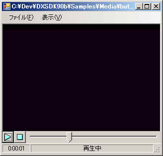
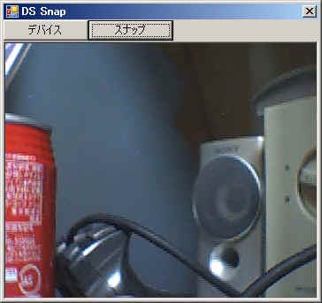
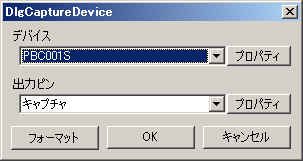

VB2005でDirectShowを使うときに参考になりそうなサンプルプログラムを公開します。
ソースは自由に流用して頂いて結構です。
各プロジェクトには下記のモジュールファイルがほぼ共通に入ってますが、
中身はそれぞれ若干違います。
| ファイル名 | 内容 |
| DirectShowDefine.vb | DirectShow関係の定義モジュール |
| DirectShowUtility.vb | VB2005から使用するときに便利な関数モジュール |
特にDirectShowUtility.vbは使用するたびに機能を追加していったり、
全体的に作り変えたりしてますんで、流用するときは注意して下さい。
基本的に新しいやつの方がバグが少ないかとは思います(^^;
３．１ 動画プレーヤー

全ソース：DSPlayer.lzh
動画ファイルの再生に関する操作のサンプルです。
再生用グラフの作り方、再生/停止/シーク、グラフ状態の取得、
ウィンドウ内での表示、などが参考になるかもしれません。
ちなみに、AVI/MPEG/WMVなどが再生できますし、WavやMP3などの音声も再生できます。
あとJPEGやアニメーションＧＩＦ(ちょっと問題ありかも)も再生できます。
さらには下記から入手できるReal Media
Splitterというのをインストールすれば
Real形式も再生できるでしょう。
http://sourceforge.net/project/showfiles.php?group_id=82303&package_id=87719
３．２ サンプルグラバによる静止画取得


全ソース：DSSnap.lzh
カメラからのライブ画像を表示し、任意のタイミングで静止画を取得するサンプルです。
静止画の取得はサンプルグラバ(ISampleGrabberインターフェース)を用いて行います。
静止画の取得方法だけでなく、カメラの選択、フォーマット形式の選択、
プロパティページ表示なども参考になるかと思います。
３．３ サンプルグラバによる音声波形取得
音声ファイルを再生しながら、現在再生中の波形（上段）を表示するサンプルです。
波形の取得は「３．２ サンプルグラバによる静止画取得」と同様にサンプルグラバを用いていますが、
ポーリングではなくコールバックを用いています。
サンプルグラバを通ったストリームはすぐに音となる訳ではなく、
通常オーディオレンダラでバッファリングされます。
この為ポーリングした波形を表示したのでは現在の音声と波形が一致しません。
これを回避するためコールバックですべての波形データを取得し一定時間バッファに溜め込んだ後、
バッファ内から現在再生時刻の波形を取り出して表示しています。
あと波形だけだと寂しかったので、DCTで得た周波数成分も表示しています。（下段）
（VB2005でも512サンプルぐらいならPen4-3GHzで十分変換できますね）
ちなみに、Wav形式だけでなくMP3やWMAなどの圧縮されたファイルの波形も表示できます。
この辺がDirectSoundではできない所ですね。